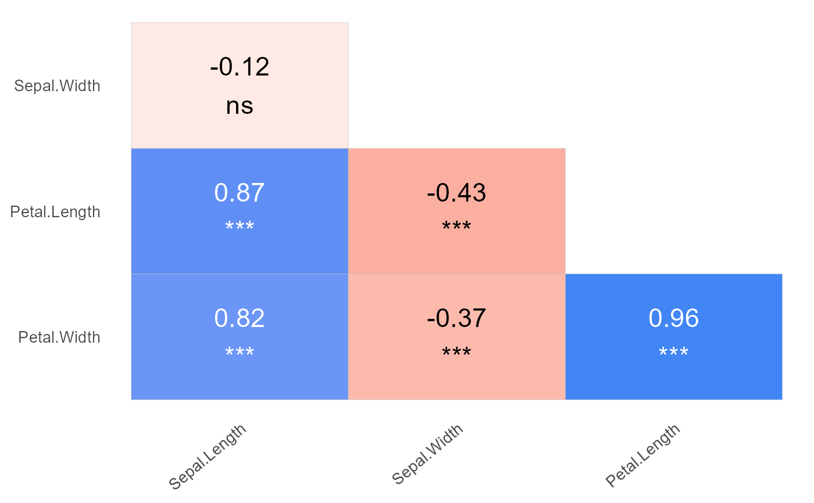

Return a ggplot object to plot a triangular correlation figure between 2 or more variables.
Usage
gg_cor(
data,
colours = c("#db4437", "white", "#4285f4"),
blackLabs = c(-0.7, 0.7),
show_signif = TRUE,
p_breaks = c(0, 0.001, 0.01, 0.05, Inf),
p_labels = c("***", "**", "*", "ns"),
show_diagonal = FALSE,
diag = NULL,
return_table = FALSE,
return_n = FALSE,
adjusted = TRUE,
label_size = 3,
method = "pearson"
)Arguments
- data
A data.frame with numerical columns for each variable to be compared.
- colours
A vector of size three with the colors to be used for values -1, 0 and 1.
- blackLabs
A numeric vector of size two, with min and max correlation coefficient.
- show_signif
Logical scalar. Display significance values ?
- p_breaks
Passed to function 'cut'. Either a numeric vector of two or more unique cut points or a single number (greater than or equal to 2) giving the number of intervals into which x is to be cut.
- p_labels
Passed to function 'cut'. labels for the levels of the resulting category. By default, labels are constructed using "(a,b]" interval notation. If
p_labels = FALSE, simple integer codes are returned instead of a factor.- show_diagonal
Logical scalar. Display main diagonal values ?
- diag
A named vector of labels to display in the main diagonal. The names are used to place each value in the corresponding coordinates of the diagonal. Hence, these names must be the same as the colnames of data.
- return_table
Return the table to display instead of a ggplot object.
- return_n
Return plot with shared information.
- adjusted
Use the adjusted p values for multiple testing instead of raw coeffs.
TRUEby default.- label_size
Numeric value indicating the label size. 3 by default.
- method
method="pearson" is the default value. The alternatives to be passed to cor are "spearman" and "kendall". These last two are much slower, particularly for big data sets.
Value
A ggplot object containing a triangular correlation figure with all
numeric variables in data. If return_table is TRUE, the table used to
produce the figure is returned instead.
Examples
library(agriutilities)
data(iris)
gg_cor(
data = iris,
colours = c("#db4437", "white", "#4285f4"),
label_size = 6
)
#> Dropping non-numeric columns in the dataset:
#> Species
